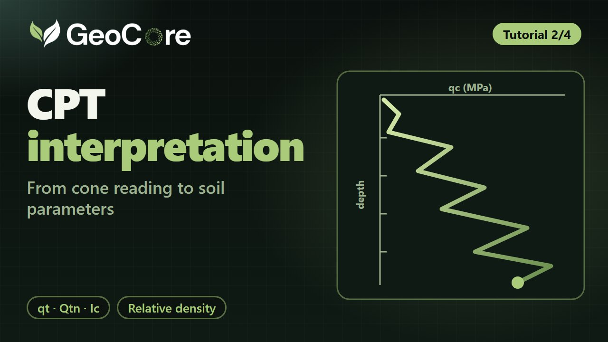
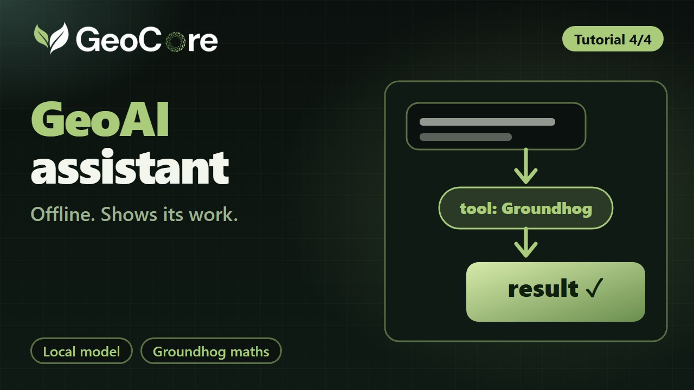

Getting started with GeoCore
Tour the workstation, fill in a calculation form, read the results and open Help.
Watch nowTutorials
Short walkthroughs recorded in GeoCore. Watch them in order, or jump to the topic you need.
Tour the workstation, fill in a calculation form, read the results and open Help.
Watch now
2:10Normalise a CPT reading, then estimate relative density with Groundhog correlations.
 2:45
2:45
API RP2GEO unit shaft friction and end bearing for piles, then undrained shallow-foundation capacity.

1:45Ask in plain language, inspect which tool ran, and choose a local model.